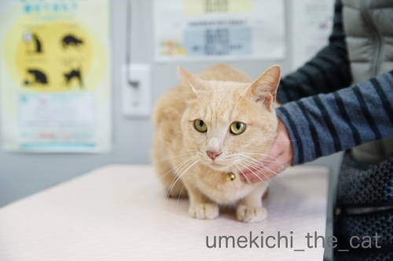
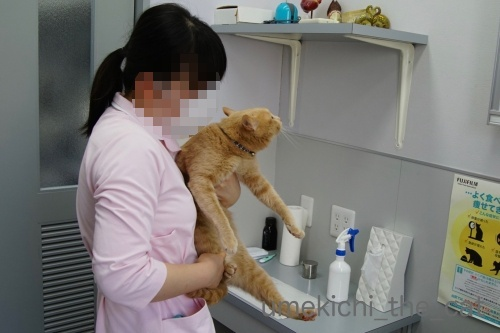
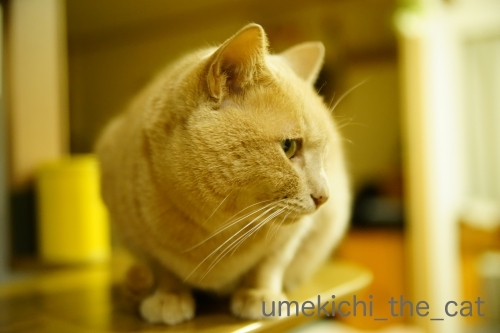
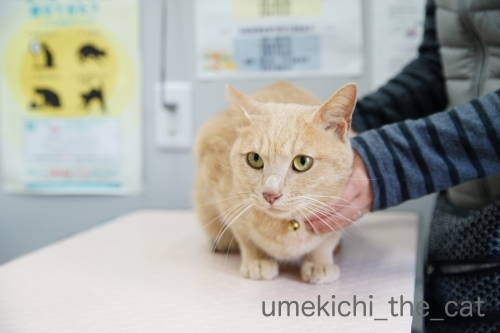
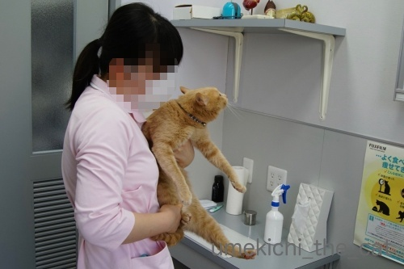
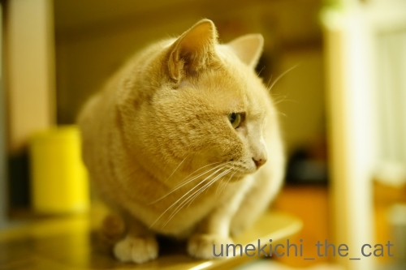

渾身のねこぱんち [梅吉]
いきなりですが、がんばるおかーさんです(*>艸<)

９日は梅吉の定期診察でした。
（梅吉は高脂血症＝中性脂肪値が高い持病があるので日々飲み薬と定期診察が必要です。
梅吉の高脂血症は生活習慣ではなく体質です。）
あごニキビで受診したのが約２週間前だったのでまだ病院の記憶が生々しかったのでしょうか。

なかなかキャリーに入ってくれません。いつもはあっけないくらいすんなり入るのに！
この後おっともカメラを置いて二人でぎゅっとイン。
ちょっと可哀想に見えるかもしれませんがこういう時はあまり時間をかけずに
勢いで入れてしまった方がお互いダメージが少ないかと思います。

![[猫]](https://blog.ss-blog.jp/_images_e/101.gif) やっぱり ここかいな（ぷんすか）
やっぱり ここかいな（ぷんすか）
今日はちっくんしますよ。がんばってくださいね。

フー！シャー！！言う割には病院スタッフの方におとなしく抱っこされますw
前回の定期診察で一部お薬が変わって約２ヶ月。
その効き目を見るための採血だったのですが結果は良好！
体重は若干増えていましたが中性脂肪値は下がっていました。
＝体重の増えた分は筋肉という事になるので良い兆候と。
このままお薬を続けて体重を現状維持で行きましょう、という事になりました。

あごの状態も見てもらいますよー。
こちらは良くなってはいませんが悪化の様子はないので
「ぽんぽんぽん」の優しい消毒を続けます。

診察の終わり採血後に巻いた包帯を取ってくれたのですが・・・
梅吉さんこれにえらくご立腹![[爆弾]](https://blog.ss-blog.jp/_images_e/154.gif)
私が両手を離した瞬間に先生に向かって渾身のねこぱーーーんちっ！！（ただし、すか〜っ）
こういう場面はさすが先生。場数を踏んでいらっしゃる。
梅吉のパンチもなかなかでしたが先生の身のかわし方の素早かった事(・o・)
獣医は動体視力と反射神経が良くないと出来ない職業かもしれませんねーwww
「梅吉！（当たらなかったけど）すごいパンチだったね！！」と
アホ夫婦は我が子の活躍を褒め讃えながら帰宅したのでした(⌒-⌒;

わしの ぱんちをかわしよった・・・

せんせいは ただもんやないな
病院、お疲れ様でしたね＾＾
次回は３ヶ月後ですよー。
 ↑ガブッと一押し↑
↑ガブッと一押し↑
今日はZEPETOのアバターの遊び方についてちょこっとご説明。
ZEPETOに登録出来るアバターは基本一つ。
（課金すれば別アバターも作れるんですが私は課金はしない主義です。）
基本は私のアバター。
基本アバターの服と髪型＆髪色を変えて眉の形を変えると
ちぃママの幼い頃に生き別れた弟（なんですよ！）ちぃ吉くんになります。
このちぃ吉くんの髪型と服を変えてメガネをかけるとおっとになりますw
(おっとからヒゲが無い！とクレームが入りましたがちょうど良い感じのが無くってw）
アバターを若くする事も出来ます。（今でも十分若いんですがw）
基本の服、髪型＆髪色を変えてチークの位置を変えると小学生のちぃさん。
せっかくなのでにっこり♪
最後にzombiekongさんのアバターですが
基本アバターの服と髪型を変え
ご存知zombiekongさんのアイコンを画像加工アプリを使って貼り付けると出来上がりです。
（ご本人はアフロじゃ無いですよ。多分ねw）
ZEPETOアプリだけでは出来ない事も画像加工アプリを組み合わせると色々出来ます。
ただ私の場合フリーの画像加工アプリを使っているせいか
加工していくうちに画質がどんどん劣化していくおまけ付きw
かと言って質の良い画像加工の出来るアプリを購入する程でもないなぁと。
なので、お見苦しい所はどうぞ大目にみてくださいませm(_ _)m
次回から妄想劇場後半が再開でーす。

９日は梅吉の定期診察でした。
（梅吉は高脂血症＝中性脂肪値が高い持病があるので日々飲み薬と定期診察が必要です。
梅吉の高脂血症は生活習慣ではなく体質です。）
あごニキビで受診したのが約２週間前だったのでまだ病院の記憶が生々しかったのでしょうか。

なかなかキャリーに入ってくれません。いつもはあっけないくらいすんなり入るのに！
この後おっともカメラを置いて二人でぎゅっとイン。
ちょっと可哀想に見えるかもしれませんがこういう時はあまり時間をかけずに
勢いで入れてしまった方がお互いダメージが少ないかと思います。

今日はちっくんしますよ。がんばってくださいね。

フー！シャー！！言う割には病院スタッフの方におとなしく抱っこされますw
前回の定期診察で一部お薬が変わって約２ヶ月。
その効き目を見るための採血だったのですが結果は良好！
体重は若干増えていましたが中性脂肪値は下がっていました。
＝体重の増えた分は筋肉という事になるので良い兆候と。
このままお薬を続けて体重を現状維持で行きましょう、という事になりました。

あごの状態も見てもらいますよー。
こちらは良くなってはいませんが悪化の様子はないので
「ぽんぽんぽん」の優しい消毒を続けます。

診察の終わり採血後に巻いた包帯を取ってくれたのですが・・・
梅吉さんこれにえらくご立腹
私が両手を離した瞬間に先生に向かって渾身のねこぱーーーんちっ！！（ただし、すか〜っ）
こういう場面はさすが先生。場数を踏んでいらっしゃる。
梅吉のパンチもなかなかでしたが先生の身のかわし方の素早かった事(・o・)
獣医は動体視力と反射神経が良くないと出来ない職業かもしれませんねーwww
「梅吉！（当たらなかったけど）すごいパンチだったね！！」と
アホ夫婦は我が子の活躍を褒め讃えながら帰宅したのでした(⌒-⌒;


病院、お疲れ様でしたね＾＾
次回は３ヶ月後ですよー。
今日はZEPETOのアバターの遊び方についてちょこっとご説明。
ZEPETOに登録出来るアバターは基本一つ。
（課金すれば別アバターも作れるんですが私は課金はしない主義です。）
基本は私のアバター。
基本アバターの服と髪型＆髪色を変えて眉の形を変えると
ちぃママの幼い頃に生き別れた弟（なんですよ！）ちぃ吉くんになります。
このちぃ吉くんの髪型と服を変えてメガネをかけるとおっとになりますw
(おっとからヒゲが無い！とクレームが入りましたがちょうど良い感じのが無くってw）
アバターを若くする事も出来ます。（今でも十分若いんですがw）
基本の服、髪型＆髪色を変えてチークの位置を変えると小学生のちぃさん。
せっかくなのでにっこり♪
最後にzombiekongさんのアバターですが
基本アバターの服と髪型を変え
ご存知zombiekongさんのアイコンを画像加工アプリを使って貼り付けると出来上がりです。
（ご本人はアフロじゃ無いですよ。多分ねw）
ZEPETOアプリだけでは出来ない事も画像加工アプリを組み合わせると色々出来ます。
ただ私の場合フリーの画像加工アプリを使っているせいか
加工していくうちに画質がどんどん劣化していくおまけ付きw
かと言って質の良い画像加工の出来るアプリを購入する程でもないなぁと。
なので、お見苦しい所はどうぞ大目にみてくださいませm(_ _)m
次回から妄想劇場後半が再開でーす。

カフェオレ色の梅吉

梅吉 2023年8月10日 永眠


梅吉と出会った譲渡会

犬猫の理由なき殺処分ゼロ
妄想広告
UMEKICHI 光

爆発的に早い！
時々攻撃的！
Thanks to Mr.Boss365
爆発的に早い！
時々攻撃的！
Thanks to Mr.Boss365

ネットに入れても抵抗するニャンがいますからね。
素直に入ってくれる子は助かります＾＾；
by ぽちの輔 (2019-03-14 05:55)
一度、ネットに入れちゃうと、もうずっとネットに入れて連れて行くしかなくなるとか。梅吉くん、なんだかんだいってちゃんとキャリーに入ってくれてエライわ！先生に、フー！シャー！の上に、猫パンチとは勇ましい。
実家のミイちゃんはビビリで、待合室ではママのお尻の後ろに丸まって隠れ、診察台では、看護師さんの胸に顔を埋めてブルブル震え、肉球に汗をかいて、看護師さんに笑われるんだって。
ZEPETO、うまいこと変身してますねー。加工は苦手なので撮りっぱなしばっかりです。兄弟キャラ、旦那さんまで、お見事！
by ChatBleu (2019-03-14 06:52)
梅吉さん、渾身の猫パンチかわされましたか。
さすが！先生です。
by ニコニコファイト (2019-03-14 07:02)
渾身の猫パンチ！！
勇ましい梅吉さんを見せつけましたね♪
って空振りでしたか(;^_^A
数値が下がって本当に良かったです！
これを維持ですね(#^.^#)
by きぃ (2019-03-14 08:01)
さすが獣医さん！
出かける前の様子とは想像できないほどお利口さんだったんですね。
でも梅吉さん、元気な証拠ですね(^_^)
by kou (2019-03-14 08:03)
梅吉さんも必死の抵抗ですねぇ(⌒-⌒; )
我が家もキャリーに入ってもらうのに
かみさんと２人でかなりの苦労しますが、
一番苦労するのは４ニャンを捕まえるところです(´･_･`)
先生に猫パンチ(°_°)
さすが「漢 梅吉さん」やりますねぇ( ^ω^ )
うちは皆石になるか、かみさんによじ登ろうとしますw
梅吉さん、ちぃさん、夫さんお疲れ様でした(_ _)
by ニッキー (2019-03-14 08:03)
おはようございます。
小生猫の場合も「かなり厳しい抵抗」します。「勢い」でするのが理想ですね。
ボスママは一気に素早く片付けます？仕置人みたいです。
「アホ夫婦は我が子の・・・」自慢しても良いと思います。
夫婦仲の会話も弾みます。梅吉くんは夫婦円満なキューピット役！！変に納得です。
ZEPETO！！
アバター解説・比較でよくわかり、面白い！！
zombieさんの加工は「CHI-PETO」ですね。不気味だけど楽しい（爆）です。
一番ナイスでオリジナルな加工です！？(=^･ｪ･^=)
by Boss365 (2019-03-14 10:46)
先生、すごい動体視力！！
流石はこの道のプロですよねー(^_^;)
by よーちゃん (2019-03-14 10:57)
先生に向かってねこぱ〜んちっ！
梅吉さんの 渾身の最期の抵抗でしたね
スッキリしたかなー？(^^)
ZEPET 凝り出すと 奥が深いですね
それが楽しいのかも♪
by チャー (2019-03-14 11:01)
梅吉さん病院でも元気で(!?)結果も良好で良かったですね。
ZEPETの作り方がよくわかりました。私のアイコンがぴったりハマってるのがうまいです。アフロにしたくなっちゃうな~。
by zombiekong (2019-03-14 11:45)
梅吉さんの渾身の猫パンチ、受けてみた～い♪ ←猫変態全開^^
一度こてつにおでこを思い切りパンチされたことありますが、肉球のせいかぱ～ん！といい音がするんですよ。
ウチでは常に二人がかりでキャリーケースに押し込みますが、思い切り爪出して腕、肩、背中とよじ登ってくるので毎回大変です^^;
血液検査の結果良好で何よりでした(#^^#)
by ゆきち (2019-03-14 12:47)
梅吉さん、足を突っ張ってキャリーケースに入りませんね（笑）
血液検査も良好で、中性脂肪も下がって、筋肉ついていうことないですね。
採決時の包帯はお気に入りだったのでしょうか（笑）
お疲れ様は、おとーさんとおかーさんでしたね。
ZEPETOの遊び方、面白かったです。
小学生のちぃさんにも会えたし、梅吉さんのおとーさんにも会えたし（笑）
夫婦って似てくるものですから、良いアイデアです。
by kiki (2019-03-14 14:55)
梅吉さん、おかーさん・・・お疲れ様でしたm(_ _)m
猫さんも色々と大変ですものね(w)
さて、梅吉さん・・・以前、２回フォトコンに入選したモデル・・・ムー君に似ています。
色はポコタの兄貴って感じですが(^_-)
by kontenten (2019-03-14 15:11)
うちのコも、病院に行くときは、キャリーを出してあることに
気づかれないように、ちゃちゃっと足を捕まえて一瞬で入れる
ようにしています。キャリー嫌いでも、帰る時は、さささっと
入ってくれるんですけどね。
アバターの解説、丁寧でわかりやすい！課金しなくても、結構
遊べるんですね。
zonbiekongさんの加工が、妙にリアリティーを感じてしまいました(笑)。
by nachic (2019-03-14 15:18)
温厚な？梅吉さんも抵抗するのですね。
やはり病院が好きな猫などいませんものね。
おかーさんも、梅吉さんも頑張りましたねパチパチ。
アバター講座みんなわかったかな～？ですね(^^
課金しなくてもここまで洋服が揃うのは結構良心的な
アバターアプリだと個人的には思います。
zonbiekongさんのアバター、そういうことだったのですね。
私はてっきり顔を隠すためのベールか何かかぶっているのだと思ってました。
by marimo (2019-03-14 15:28)
梅吉さん抵抗もむなしくですね！
先生は流石になれているのですね(^^)
by ma2ma2 (2019-03-14 16:08)
先生って、意外とデカイんですね〜
お母さんと一緒！で判明しました。^ ^
by 小松達也 (2019-03-14 18:07)
梅吉くん良かった！
お薬が合っているのですね。この調子で元気に過ごしてほしいわ^^
あごは、まだ時間がかかるかもしれないけど
真菌じゃ無いから安心してます。（安心って言い方はヘンだねｗ）
ZEPETO講座ありがとう^^
みんなこれでZEPETOをやってみてくなるといいよねｗ
by リュカ (2019-03-14 18:36)
梅吉くん、おかーさんおとーさん。病院お疲れさまでした。
お薬の効果が出ているみたいで良かった(*^-^*)
体重増加も筋肉！いいことです。
うちの子はお腹がぽちゃっとしてきましたよ。
渾身の猫パンチ！！空を・・・。
でも、次こそはとか考えちゃだめですよ！
おかーさんとおとーさんが平謝りするはめになりますからねｗ
ZEPETOのzombiekongさんはそういう事だったのですね。
ちぃ吉も旦那様も！
個人的には小さい頃のちぃちゃんが可愛くって好き～♪
あと、ミッションごとのメイクのクオリティの高さに毎回驚いています(*^-^*)
by emi (2019-03-14 18:45)
ネックリフレッシュ♪良かった(^^)
足もレッグリフレッシュですね
あちこち グイと、入ります
やり過ぎに注意しないとね〜
by チャー (2019-03-14 19:26)
キャリーイン、爪を出して思い切り抵抗してますね。^^;
血液検査は良好とのことで何よりです。
パンチをかわされた梅吉さん、
ちょっぴりショックだったのかなあ。^^;;
by yes_hama (2019-03-14 21:43)
猫パンチはよけてはいけません。
猫パンチの快感を先生は知らない。
十分知ってますね^^;
流石、獣医＾＾
by riverwalk (2019-03-14 21:44)
ZEPETO もっと増えれば楽しいのにねぇ
by (。・_・。)２ｋ (2019-03-14 23:29)
病院連れてくの大変ですよね～お疲れ様でした。ひと安心ですね＾＾
梅吉くん、抵抗してますが、これくらいなら良い子の方ですよね。
パンチをかわす先生、さすが（拍手～！）
zombiekongさんのZEPETO、そういうことだったんですか～＾＾
アバターがなんかそれらしく見えるのが不思議です。‥あっ、アイコンは似てはいないんですけど＾＾；
by sana (2019-03-15 00:31)
あら、梅吉くん「空を切るパンチ同好会」入会されますか？ただいま会員はナノ一人ですが(^_^;)
by palpal (2019-03-15 14:34)
そう！キャリーに入れるには勢いが大事ですよね。
うちは寝ているところを襲って寝ぼけているうちに
いれます(笑)暴れるのでネット必須で＾＾
しかし先生、ツワモノですねーーｗｗ
梅ちゃん、今度はパンチ食らわしてやりましょう(*￣ー￣*)ﾆﾔﾘｯ
結果がよくて何よりでした。
お疲れさまでした！！
ZEPETO、小さい時のアバにも出来るところがすごい！
みなさんがハマるのも分かります(´ー｀*)ｳﾝｳﾝ
by カトリーヌ (2019-03-15 15:02)
何でもない時はそういうバッグには進んで入る猫だけど、人に入れられるのは嫌がるんだね（ﾟ□ﾟ）
てゆーか、何処に連れて行かれるかが分かってるからか？
by 英ちゃん (2019-03-15 18:16)
通院お疲れ様でした。やはり皆様キャリーで連れて行くんですね。フツーそうですよね。
私は反則技で洗濯ネットを使います。気持ち良さそうに寝ているところを見計らって、上からずっぽり。
by ねこママ (2019-03-16 18:51)
ぽちの輔さん＞
うちはネットに入れると余計抵抗しそうです。
というかネットをぶち破りそうですwww
ChatBleuさん＞
梅吉は普段キャリーに入って遊ぶ子なので（笑）
ネットは幼い頃遊びで入れたことしかありませんw
この日も多少手こずりましたがきっと他所のニャンコよりも
楽チンだったに違いないです＾＾
３ヶ月後の通院時にはにはあっさり入ると思われます。
梅吉って扱いやすい子！
ミイちゃんったらビビりちゃん(≧▽≦)
先代猫は病院に行くと石になっちゃう子で
肉球にもびっしょり汗かくので診察台の上に肉球の跡がw
ミイちゃんと良い勝負だったかもー(*>艸<)
ニコニコファイトさん＞
梅吉は生まれて初めての本気のねこぱんちでしたが
先生にとってはきっと何百回目かの・・・www
獣医さんって大変です！
きぃさん＞
梅吉頑張ったんですけどねー！
実戦経験が皆無なので空振りでしたwww
梅吉の血液検査の数値は上下が結構あるので
今回はたまたまだった可能性も・・・（あくまで可能性です）
次回の検査結果が重要かなって思ってます。
kouさん＞
病院でも元気一杯です(*>艸<)
「いつかぱんちしたる」ってず〜っと思ってたのかもしれませんね！
ニッキーさん＞
おお！ニッキーさんちのニャンズさんはビックサイズの方揃いなので
（ノエルさん除くw）
キャリーに押し込むのも一苦労、いえ三苦労ですね(⌒-⌒;
普段はのんびりしているにゃんこも病院の気配をキャッチすると
信じられないくらい早く動きますからね〜。
１にゃんさんを捕獲しているうちに３ニャンさんは
見つからないところ、見つからないところに行っちゃいそうだし。
うちなどまだまだ、楽な方だたって思いました(^_－)☆
Boss365さん＞
ボスママさん、必殺技をお持ちですか！
うちは今まで楽してましたが今後抵抗も予想されるかも。
私も何か技を考えておきますwww
すももちゃんもキューピッド、あるいは鎹でしょうか。
間違いなくどの御宅でもそうですよね！！
「CHI-PETO」ありがとうございます＾＾
zombiekongさんのアバターはそうあるべきなのが当然なように
ハマりました！運命！？(*>艸<)
よーちゃん＞
先生の身のこなし、慣れってすごいなって思いました！
それに梅吉ならそのうちきっとぱんちがくる！って
用心していたのでしょう(*>艸<)
チャーさん＞
今まで「くそー！」と思ってたのが
少しは発散できたでしょうか（当たらなかったけどw）(*>艸<)
ゼペット、凝りすぎないように程々にしないとね、
とも思ってますw
ネックリフレッシュ毎晩お風呂で使ってまーす＾＾
ほんと、やりすぎ注意、ですね(⌒-⌒;
zombiekongさん＞
病院でもどこでも梅吉らしさを失わないようで・・・www
zombiekongさんのアバターは、特に考えたわけでもなく
自然に手が動いて！
生まれるべくして生まれたアバターだと思ってます(*>艸<)
アフロ・・・見に（会いに）行っちゃいますよ！！
ゆきちさん＞
ぱ〜ん！わかります！！良い音しますよね＾＾
爪が出てなければ私もねこぱんちウエルカムでーす！
梅吉は家では絶対爪出さないのでもっと打って欲しいんですが
（猫変態発言！！）
あまりパンチしてくれなくてwwwww
こてつくんの抵抗は激しそうです。
それはお互いのダメージ＆疲弊を避けるためにも
お家での爪切りの成功を祈りますm(_ _)m
kikiさん＞
そうなんです！
この「突っ張るあち」が問題でして・・・
足を動かないように持つと今度はみょ〜んと伸びて逃げるし
伸びないようにすると今度は足で突っ張るし。
抵抗されると一人でキャリーに入れるのはとっても大変ですw
ZEPETO、お金をかけなくても色々できるんですよ＾＾
あれこれ工夫するのが面白いです！
kontentenさん＞
フォトコンに入選したモデルにゃんこ・・・
それはさぞや美猫ちゃんに違いないですね！！(^_－)☆
うちも梅吉の美貌（爆）を生かしてフォトコン、頑張らなきゃ、ですw
nachicさん＞
うちも診察が終わると察知して
「わしは もうええやろ！」とさっさとキャリーに入りますw
不思議ですよねー(⌒-⌒;
ZEPETO、課金しなくても全然大丈夫です＾＾
こういうのにお金かけるのって勿体無いし(^_－)☆
marimoさん＞
温厚w始めてその様な褒め言葉をいただきましたわ＾＾
梅吉は普段キャリーに入って遊んで気が向いたら中で寝ちゃう様な
神経の太い子なのですが・・・
私から「病院に行くオーラ」でも出ていてそれを察知したんでしょうかw
ゼペットは課金しなくても十分遊べますよね！
むしろ課金せずに工夫して遊ぶ、みたいな楽しみもあったりして。
zombiekongさんのアバターはひらめきで作ったら
見事にハマって自分でもびっくり〜0(≧▽≦)0
ma2ma2さん＞
いくら暴れん坊でも所詮家猫ですw
下僕だってやるときはやるんですよ〜(*>艸<)
小松達也さん＞
現在4.8kg。体重だけ見るとちょっと大きめかなくらいだと思いますが
（私の中で「大きい猫」とはニッキーさんちのニャンズですw）
梅吉はながい、なが〜いwww
リュカさん＞
このお薬液状なので扱いも楽なのよー。
この薬で治療が続けばいいなっておもってます＾＾
あごニキビも良くなると。
あごはね、私も安心してます！
そのうち治るでしょ、くらいにどーんと構えていますよ。
実際できることは無いしね。
ZEPETO、どうしようかな・・・と迷っている人まだいそうよ。
そんな人はとりあえずやってみてって思ってまーす(≧▽≦)
emiさん＞
お薬の効果出ている様でちょっと安心しました。
前の薬がそうだったんだけど
一時下がってまた数値が上昇という事があるので
重要なのは次の採血結果かなと思ってます。
良い結果が出るといいなぁ。
このお薬液状なので与え易くもあって私としても好ましいの＾＾
おなかぽちゃっ・・・うふふ・・・
健康上問題なければそれが可愛いよねー0(≧▽≦)0
そのお腹に顔をくっつけたいです！
ZEPETOのメイク褒めてくれてありがとう。
リアルはあまりメイクしないのでアバターで楽しんでます♪
どうせやるなら現実離れしたのにしようって0(≧▽≦)0
yes_hamaさん＞
そうなんですwすごく爪出ていますよねww
本にゃんはそのつもりがなくてもこれに引っかかっちゃうと
結構ダメージを受けるので気をつける様にしています＾＾
ねこパンチ、これはほんの挨拶程度や！次回は本気や！！
なんて思ってないことを願います(⌒-⌒;
riverwalkさん＞
先生には避けられちゃったけど
家で私がしっかり梅吉ぱんちを受け止めたいと思ってます！！
って私にはパンチあんまりしてくれないんですよね(-_-メ)
（ねこ変態発言www）
2kさん＞
動物のアバターも作れれば良いのにって思ってます！
sanaさん＞
先代は捕まえるところから苦労したのでそれを考えると梅吉はちょろいです（笑）
鳴き叫んだりしないしむしろ猫をキャリーに入れる
私の腕が鈍ったな・・・と思いました(⌒-⌒;
ZEPETOのzombiekongさん、ご本人に全く似ていないだろうし
ふざけた出で立ちで失礼かと思ったのですが
広いお気持ちで受け止めていただいているので有難いです＾＾
アバターの作り方、「そう言うことだったのね！」と言う反応が多かったので
記事にしてみて良かったです。
palpalさん＞
胸を張って「空を切るパンチ同好会」入会希望しますよ！！
隠れ会員もたくさんいそうですねwww
カトリーヌさん＞
キャリーにイン！は寝込みを襲うのが一番ですよねー！
うちもそうしたいのですが私が出かける支度をし始めると
ストーカーに変身するので出来なくって(⌒-⌒;
キャリーを見ても逃げたりしないので（むしろ入って遊ぶw)
扱いやすい子ではあるのですけれど＾＾
先生にパンチ・・・見たい、それは見たいwww
きっと「ごめんなさい！」とか言わないで
「梅吉やったねーーー！！！」って叫んじゃいそうです(*>艸<)
ZEPETOフレッシュな仲間を募集中ですよ(^_－)☆
何気に私のコード書いちゃいます「70YHGN」でーす＾＾
英ちゃんさん＞
どうやら飼い主が「よし！病院に行くぞ！」と発する気を読むんでしょうかw
キャリーに入れられたらちょっと文句を言った後は
大人しく外の景色を見て楽しんでるんですけれど(*>艸<)
ねこママさん＞
洗濯ネット派の方もブログや病院で見かけますよ＾＾
うちは暴れん坊なので洗濯ネットは突き破りそうだし
キャリーには入ってしまえば大人しく外の景色を眺めているので
キャリー派ですけど(≧▽≦)
by ちぃ (2019-03-17 17:26)
梅さま、病院おつかれさまでした。
現状維持でひと安心ですね^^
＞＞以下、私信です
先日、横のフォームから、ねこおもちゃの件でメッセ送ったのですが
届いておりますでしょうか・・・
いきなり余計なお世話だったと後々から思い始め・・・
そのままスルーしちゃっておいてください、失礼しました^^;
（お気に障ったらスミマセン・・・）
by Ja-Kou66 (2019-03-17 23:32)
Ja-Kou66さん＞
このままお薬の効果が続いて
ついでにあごニキビも治ると良いなと思ってます！
猫おもちゃこと、お気遣い本当に感謝です(≧▽≦)
by ちぃ (2019-03-19 10:25)